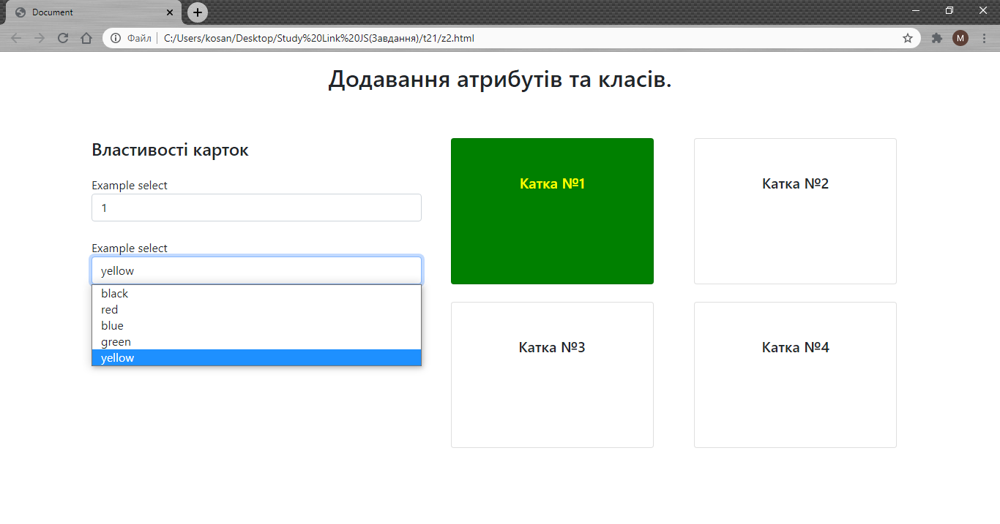

Тема 21. Завдання 2
1. Використайте готову верстку для завдання:
z2.html
.

2. Створіть програму яка буде додавати стилі введені у відповідні поля після вибору нової опції. Використовуйте додавання атрибуту style.